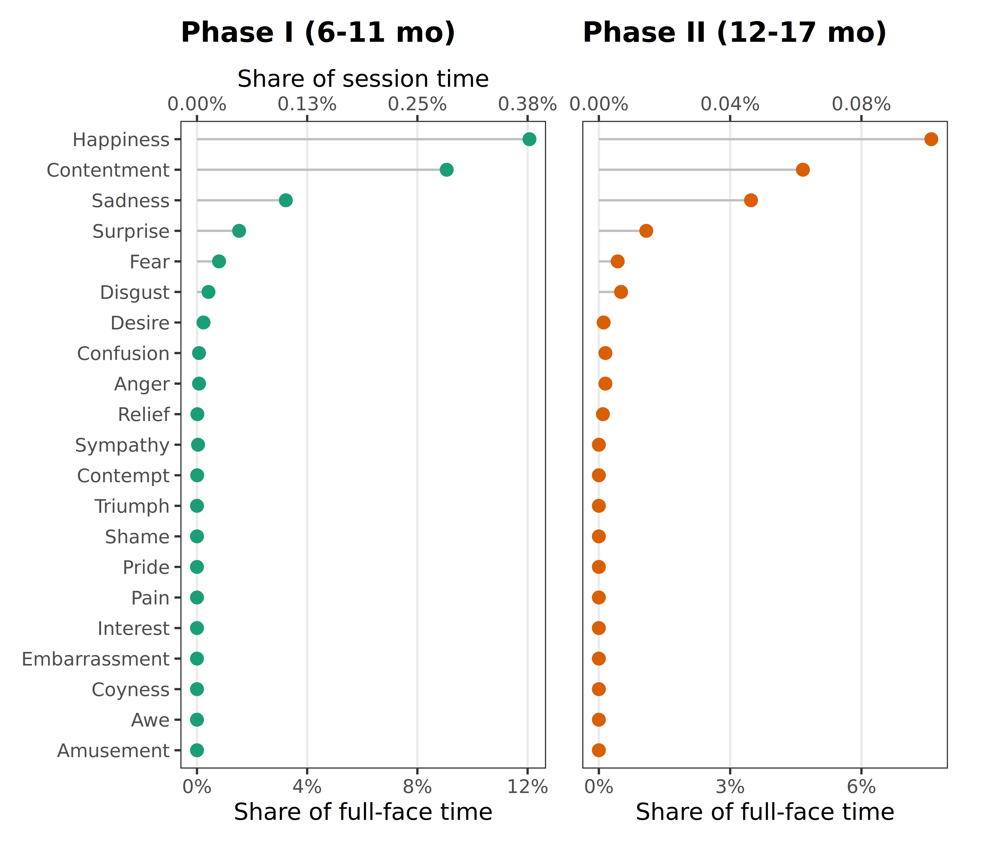
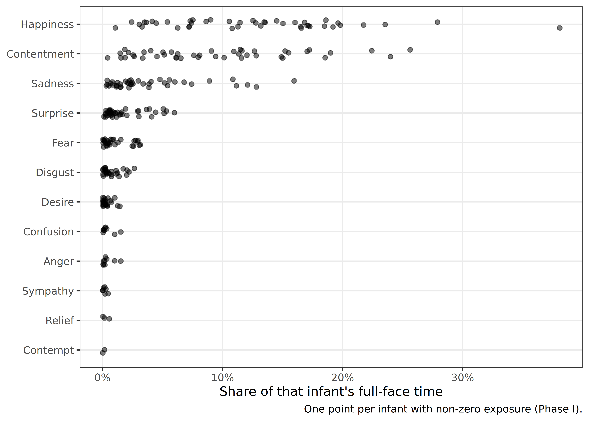

library(tidyverse)
library(furrr)
library(gt)
library(facs)
library(easystats)
library(patchwork)Hypothesized Facial Configurations
Approach
- Unit: each coded FACS event is one momentary configuration of one face. Recordings contain multiple faces, coded separately by identity.
- Exposure: duration-weighted person-time. Overlapping events are merged within a face (a face cannot double-count itself), then summed across faces (two co-visible faces contribute independently).
- Denominators: valid full-face time (which includes time a face was visible but no AU was coded) and valid session time.
- Assessability: hypothesized configurations are reduced to the project scheme. Those retaining no in-scheme AUs are unassessable and cannot occur by construction; those losing some AUs are partially assessable.
- Phases are never pooled. Phase I (waves 6, 9) is the main analysis. Phase II (waves 12, 15) is reported in the supplement.
Data
info <-
left_join(
read_rds("/mnt/datasets/SEEDLingS/2_PROCESSED/session_info.rds"),
read_rds("facs_times.rds"),
by = c("subject", "wave")
) |>
filter(!(subject == 18 & wave == 6)) |>
mutate(
valid_session = session_duration - vis - hat,
valid_fullface = ffa - vis - hat,
phase = if_else(wave %in% c(6, 9), "I", "II")
)
facs <-
read_rds("/mnt/datasets/SEEDLingS/2_PROCESSED/facs_coding.rds") |>
left_join(info, by = c("subject", "wave")) |>
filter(!(subject == 18 & wave == 6)) |>
drop_na(facs_identity, facs_duration) |>
filter(facs_duration > 0) |>
# identity belongs in the event key: facs_id may restart per face
mutate(event_id = str_c(subject, wave, facs_identity, facs_id, sep = "_"))
# event_id must uniquely identify an event
stopifnot(n_distinct(facs$event_id) == nrow(facs))
project_scheme <- scheme(list(
occurrence = c(1:2, 4:39),
intensity = c(1:2, 4:39),
asymmetry = c(1:2, 4:39)
))
protos <-
prototypes |>
filter(is.na(emotion_type) | emotion_type != "compound") |>
mutate(
emotion = case_when(
emotion %in% c("anger", "angry") ~ "anger",
emotion %in% c("confused", "confusion") ~ "confusion",
emotion %in% c("desire", "desire food", "desire sex") ~ "desire",
emotion %in% c("disgust", "disgusted") ~ "disgust",
emotion %in% c("fear", "fearful") ~ "fear",
emotion %in% c("happy", "happiness", "joy") ~ "happiness",
emotion %in% c("sad", "sadness") ~ "sadness",
emotion %in% c("surprise", "surprised") ~ "surprise",
.default = emotion
)
)
phase_totals <-
info |>
summarize(
.by = phase,
valid_session = sum(valid_session, na.rm = TRUE),
valid_fullface = sum(valid_fullface, na.rm = TRUE),
n_infants = n_distinct(subject)
) |>
arrange(phase)
phase_totalsAssessability of the hypothesized set
# Canonical AU-set key: sorted, de-duplicated integer AUs joined by "+".
# Used for ALL matching, so joins compare plain strings rather than fcs_cdng
# objects (which need not compare equal even for identical AU sets).
canon_code <- function(x) {
map_chr(x, \(code) {
aus <- sort(unique(pull_numcodes(code)))
if (length(aus)) paste(aus, collapse = "+") else NA_character_
})
}
proto_status <-
protos |>
mutate(
name = paste(source, emotion, config_num, sep = "_"),
full_aus = map_int(code, \(x) length(pull_numcodes(x))),
kept_aus = map_int(code, \(x) length(intersect(pull_numcodes(x), project_scheme$occurrence))),
status = case_when(
kept_aus == 0 ~ "unassessable",
kept_aus < full_aus ~ "partial",
.default = "complete"
),
reduced = map_chr(code, \(x) {
keep <- sort(intersect(pull_numcodes(x), project_scheme$occurrence))
if (length(keep)) paste(keep, collapse = "+") else NA_character_
})
)
proto_status |>
summarize(.by = status, configs = n(), emotions = n_distinct(emotion)) |>
mutate(pct = configs / sum(configs)) |>
arrange(factor(status, levels = c("complete", "partial", "unassessable"))) |>
gt() |>
tab_header(title = "Assessability of hypothesized configurations") |>
fmt_percent(columns = pct, decimals = 1) |>
cols_label(status = "Status", configs = "Configs", emotions = "Emotions",
pct = "% of configs")| Assessability of hypothesized configurations | |||
| Status | Configs | Emotions | % of configs |
|---|---|---|---|
| complete | 223 | 12 | 81.4% |
| partial | 46 | 13 | 16.8% |
| unassessable | 5 | 4 | 1.8% |
emotions_lost <-
proto_status |>
summarize(.by = emotion, all_unassessable = all(status == "unassessable")) |>
filter(all_unassessable) |>
pull(emotion)
cat("Emotions with no assessable configuration:",
if (length(emotions_lost)) paste(emotions_lost, collapse = ", ") else "none", "\n")Emotions with no assessable configuration: boredom # Assessable hypothesized configurations, keyed by canonical reduced AU set.
# `reduced` is already a canonical string (sorted, "+"-joined), so it is the key.
protos_assessable <-
proto_status |>
filter(status != "unassessable") |>
distinct(emotion, reduced, status) |>
rename(occ_key = reduced)Observed configurations
plan("multisession", workers = 9)
occ_events <-
facs |>
mutate(
occ_key = future_map_chr(facs_code, \(x) {
codes <- tidy(coding(x))[[1]]$occurrence
keep <- sort(codes[codes %in% project_scheme$occurrence])
if (length(keep)) paste(keep, collapse = "+") else NA_character_
})
) |>
drop_na(occ_key)
occ_events |> count(phase, name = "events")# Confirm the string join recovers matches. If this is 0, no assessable
# configuration ever occurred; otherwise it is the number of matched event rows.
n_matched <-
occ_events |>
semi_join(protos_assessable, by = "occ_key") |>
nrow()
cat("Event rows matching any assessable hypothesized configuration:", n_matched, "\n")Event rows matching any assessable hypothesized configuration: 3392 Exposure (person-time)
# Merge overlapping events WITHIN a face, then sum ACROSS faces.
merge_within_face <- function(df, keys) {
df |>
arrange(across(all_of(keys)), facs_onset) |>
mutate(
.by = all_of(keys),
max_off = cummax(lag(facs_offset, default = -Inf)),
new_blk = facs_onset > max_off,
block_id = cumsum(new_blk)
) |>
summarize(
.by = c(all_of(keys), block_id),
onset = min(facs_onset),
offset = max(facs_offset)
) |>
mutate(block_dur = offset - onset) |>
summarize(.by = all_of(keys), duration = sum(block_dur))
}
emotion_events <-
occ_events |>
inner_join(
protos_assessable |> select(emotion, occ_key),
by = "occ_key",
relationship = "many-to-many"
) |>
# an event may match several variants of one emotion: count it once per emotion
distinct(subject, wave, phase, facs_identity, emotion, event_id,
facs_onset, facs_offset, facs_duration)
# subject x wave x emotion person-time (merged within face, summed across faces)
emotion_subject <-
emotion_events |>
merge_within_face(keys = c("subject", "wave", "phase", "facs_identity", "emotion")) |>
summarize(.by = c(subject, wave, phase, emotion), duration = sum(duration))
# complete the grid so non-occurrences are explicit zeros
emotion_long <-
crossing(
info |> select(subject, wave, phase, valid_session, valid_fullface),
emotion = sort(unique(protos_assessable$emotion))
) |>
left_join(emotion_subject, by = join_by(subject, wave, phase, emotion)) |>
replace_na(list(duration = 0)) |>
mutate(
fullface_pct = duration / valid_fullface,
session_pct = duration / valid_session
)
# Collapse subject-waves to subject-within-phase BEFORE counting infants, so a
# subject exposed in both waves is not counted twice (this was inflating the
# infant counts above the sample size).
emotion_subject_phase <-
emotion_long |>
summarize(.by = c(phase, subject, emotion), duration = sum(duration))
emotion_phase <-
emotion_subject_phase |>
summarize(
.by = c(phase, emotion),
seconds = sum(duration),
infants_any = n_distinct(subject[duration > 0]), # distinct infants
max_infant_sec = max(duration) # largest infant (summed over waves)
) |>
left_join(phase_totals, by = "phase") |>
mutate(
fullface_pct = seconds / valid_fullface,
session_pct = seconds / valid_session,
top_infant_share = if_else(seconds > 0, max_infant_sec / seconds, NA_real_)
)MAIN TABLE (Phase I): exposure to hypothesized configurations
n_inf_i <- phase_totals$n_infants[phase_totals$phase == "I"]
emotion_phase |>
filter(phase == "I") |>
arrange(desc(fullface_pct)) |>
select(emotion, seconds, fullface_pct, session_pct, infants_any, top_infant_share) |>
mutate(emotion = str_to_title(emotion)) |>
gt() |>
tab_header(
title = "Phase I: exposure to hypothesized facial configurations",
subtitle = "Person-time; co-visible faces contribute independently"
) |>
fmt_number(columns = seconds, decimals = 1) |>
fmt_percent(columns = c(fullface_pct, session_pct, top_infant_share), decimals = 2) |>
sub_missing(missing_text = "\u2014") |>
cols_label(
emotion = "Emotion",
seconds = "Seconds",
fullface_pct = "% Full-face time",
session_pct = "% Session time",
infants_any = paste0("# Infants (of ", n_inf_i, ")"),
top_infant_share = "Largest infant's share"
) |>
tab_source_note(md(
"Emotions with no assessable hypothesized configuration are omitted. A single observed configuration can match several emotions, so rows are not additive; see the union total in text. *Largest infant's share* is the proportion of that emotion's total exposure contributed by the single most-exposed infant."
))| Phase I: exposure to hypothesized facial configurations | |||||
| Person-time; co-visible faces contribute independently | |||||
| Emotion | Seconds | % Full-face time | % Session time | # Infants (of 44) | Largest infant's share |
|---|---|---|---|---|---|
| Happiness | 1,146.5 | 12.07% | 0.38% | 44 | 10.28% |
| Contentment | 861.2 | 9.06% | 0.28% | 44 | 9.35% |
| Sadness | 306.4 | 3.23% | 0.10% | 42 | 14.63% |
| Surprise | 145.3 | 1.53% | 0.05% | 41 | 19.85% |
| Fear | 76.0 | 0.80% | 0.03% | 30 | 23.63% |
| Disgust | 39.7 | 0.42% | 0.01% | 28 | 14.82% |
| Desire | 22.5 | 0.24% | 0.01% | 26 | 31.87% |
| Anger | 7.1 | 0.07% | 0.00% | 9 | 32.70% |
| Confusion | 7.1 | 0.07% | 0.00% | 9 | 32.70% |
| Sympathy | 3.6 | 0.04% | 0.00% | 7 | 31.80% |
| Relief | 1.4 | 0.01% | 0.00% | 3 | 56.03% |
| Contempt | 0.8 | 0.01% | 0.00% | 2 | 78.36% |
| Amusement | 0.0 | 0.00% | 0.00% | 0 | — |
| Awe | 0.0 | 0.00% | 0.00% | 0 | — |
| Coyness | 0.0 | 0.00% | 0.00% | 0 | — |
| Embarrassment | 0.0 | 0.00% | 0.00% | 0 | — |
| Interest | 0.0 | 0.00% | 0.00% | 0 | — |
| Pain | 0.0 | 0.00% | 0.00% | 0 | — |
| Pride | 0.0 | 0.00% | 0.00% | 0 | — |
| Shame | 0.0 | 0.00% | 0.00% | 0 | — |
| Triumph | 0.0 | 0.00% | 0.00% | 0 | — |
| Emotions with no assessable hypothesized configuration are omitted. A single observed configuration can match several emotions, so rows are not additive; see the union total in text. Largest infant’s share is the proportion of that emotion’s total exposure contributed by the single most-exposed infant. | |||||
FIGURE: exposure by emotion and phase
# Emotion order fixed across panels, by max exposure across phases.
emotion_order <-
emotion_phase |>
summarize(.by = emotion, m = max(fullface_pct)) |>
arrange(m) |>
pull(emotion) |>
str_to_title()
# One panel per phase, each with its own exact full-face -> session ratio and
# its own ~4 round breaks.
hep_panel <- function(ph, color, show_y) {
d <- emotion_phase |> filter(phase == ph) |>
mutate(emotion = factor(str_to_title(emotion), levels = emotion_order))
tot <- phase_totals |> filter(phase == ph)
ratio <- tot$valid_fullface / tot$valid_session
top <- max(d$fullface_pct, na.rm = TRUE)
step <- signif(top / 3, 1)
brk <- seq(0, ceiling(top / step) * step, by = step)
ggplot(d, aes(x = fullface_pct, y = emotion)) +
geom_segment(aes(xend = 0, yend = emotion), color = "grey75", linewidth = 0.5) +
geom_point(size = 2.4, color = color) +
scale_x_continuous(
name = "Share of full-face time",
breaks = brk,
labels = scales::percent,
sec.axis = sec_axis(
transform = ~ .x * ratio,
name = if (ph == "I") "Share of session time" else NULL,
breaks = brk * ratio,
labels = scales::label_percent(accuracy = 0.01)
)
) +
labs(y = NULL, title = c("I" = "Phase I (6-11 mo)",
"II" = "Phase II (12-17 mo)")[[ph]]) +
theme_bw() +
theme(
plot.title = element_text(face = "bold", size = 13, margin = margin(b = 8)),
panel.grid.major.y = element_blank(),
panel.grid.minor = element_blank(),
axis.text.y = if (show_y) element_text() else element_blank(),
axis.ticks.y = if (show_y) element_line() else element_blank()
)
}
fig_hep <-
hep_panel("I", "#1b9e77", show_y = TRUE) +
hep_panel("II", "#d95f02", show_y = FALSE) +
plot_layout(nrow = 1) &
theme(plot.margin = margin(t = 5, r = 12, b = 5, l = 5))
fig_hep
ggsave("fig_hep.png", fig_hep, width = 6.5, height = 5.5, dpi = 300)IN-TEXT NUMBERS (Phase I)
Summing across emotions double-counts, because one configuration can match several. The union below counts each face-second once and is the number to report as a total.
any_hep <-
occ_events |>
semi_join(protos_assessable, by = "occ_key") |>
merge_within_face(keys = c("subject", "wave", "phase", "facs_identity")) |>
summarize(.by = phase, seconds = sum(duration)) |>
left_join(phase_totals, by = "phase") |>
mutate(
pct_fullface = seconds / valid_fullface,
pct_session = seconds / valid_session
)
any_hep |>
gt() |>
tab_header(title = "Any hypothesized configuration (union across emotions)") |>
fmt_number(columns = c(seconds, valid_fullface, valid_session), decimals = 0) |>
fmt_percent(columns = c(pct_fullface, pct_session), decimals = 2) |>
cols_label(phase = "Phase", seconds = "Seconds",
valid_fullface = "Full-face sec", valid_session = "Session sec",
pct_fullface = "% Full-face", pct_session = "% Session")| Any hypothesized configuration (union across emotions) | ||||||
| Phase | Seconds | Session sec | Full-face sec | n_infants | % Full-face | % Session |
|---|---|---|---|---|---|---|
| I | 1,674 | 302,193 | 9,501 | 44 | 17.61% | 0.55% |
| II | 328 | 178,688 | 2,516 | 31 | 13.02% | 0.18% |
list(
n_protos = nrow(proto_status),
n_complete = sum(proto_status$status == "complete"),
n_partial = sum(proto_status$status == "partial"),
n_unassessable = sum(proto_status$status == "unassessable"),
emotions_unassessable = if (length(emotions_lost)) paste(emotions_lost, collapse = ", ") else "none",
emotions_assessed = n_distinct(protos_assessable$emotion),
hep_pct_fullface_I = any_hep$pct_fullface[any_hep$phase == "I"],
hep_pct_session_I = any_hep$pct_session[any_hep$phase == "I"]
) |>
enframe(name = "quantity", value = "value") |>
mutate(value = map_chr(value, \(x) format(unlist(x), digits = 3))) |>
print(n = Inf)# A tibble: 8 × 2
quantity value
<chr> <chr>
1 n_protos 274
2 n_complete 223
3 n_partial 46
4 n_unassessable 5
5 emotions_unassessable boredom
6 emotions_assessed 21
7 hep_pct_fullface_I 0.176
8 hep_pct_session_I 0.00554ff_i <- any_hep$pct_fullface[any_hep$phase == "I"]
ss_i <- any_hep$pct_session[any_hep$phase == "I"]
top3 <- emotion_phase |> filter(phase == "I") |> slice_max(fullface_pct, n = 3)
n_none <- emotion_phase |> filter(phase == "I", seconds == 0) |> nrow()
cat(sprintf(
"## Key takeaways (Phase I)
1. **Hypothesized configurations are rare in infants' input.** Infants spent
%.2f%% of full-face time (%.2f%% of session time) seeing any assessable
hypothesized configuration.
2. **What exposure there is concentrates in a few emotions.** %s account for most
of it; %d assessable emotions never occurred at all.
3. **Some emotions could not be assessed.** %d of %d hypothesized configurations
contain no AU in our coding scheme%s, so their absence would describe the
scheme rather than infants' input.
4. **Emotion counts are not additive.** Hypothesized sets overlap, so one observed
configuration can match several emotions. Totals are unions over face-time.
",
100 * ff_i, 100 * ss_i,
paste(str_to_title(top3$emotion), collapse = ", "), n_none,
sum(proto_status$status == "unassessable"), nrow(proto_status),
if (length(emotions_lost)) paste0(", leaving ", paste(emotions_lost, collapse = " and "),
" with none assessable") else ""
))Key takeaways (Phase I)
- Hypothesized configurations are rare in infants’ input. Infants spent 17.61% of full-face time (0.55% of session time) seeing any assessable hypothesized configuration.
- What exposure there is concentrates in a few emotions. Happiness, Contentment, Sadness account for most of it; 9 assessable emotions never occurred at all.
- Some emotions could not be assessed. 5 of 274 hypothesized configurations contain no AU in our coding scheme, leaving boredom with none assessable, so their absence would describe the scheme rather than infants’ input.
- Emotion counts are not additive. Hypothesized sets overlap, so one observed configuration can match several emotions. Totals are unions over face-time.
SUPPLEMENT
S1. Phase II
n_inf_ii <- phase_totals$n_infants[phase_totals$phase == "II"]
emotion_phase |>
filter(phase == "II") |>
arrange(desc(fullface_pct)) |>
select(emotion, seconds, fullface_pct, session_pct, infants_any, top_infant_share) |>
mutate(emotion = str_to_title(emotion)) |>
gt() |>
tab_header(title = "Phase II: exposure to hypothesized facial configurations") |>
fmt_number(columns = seconds, decimals = 1) |>
fmt_percent(columns = c(fullface_pct, session_pct, top_infant_share), decimals = 2) |>
sub_missing(missing_text = "\u2014") |>
cols_label(
emotion = "Emotion", seconds = "Seconds",
fullface_pct = "% Full-face time", session_pct = "% Session time",
infants_any = paste0("# Infants (of ", n_inf_ii, ")"),
top_infant_share = "Largest infant's share"
)| Phase II: exposure to hypothesized facial configurations | |||||
| Emotion | Seconds | % Full-face time | % Session time | # Infants (of 31) | Largest infant's share |
|---|---|---|---|---|---|
| Happiness | 191.2 | 7.60% | 0.11% | 24 | 15.57% |
| Contentment | 117.3 | 4.66% | 0.07% | 23 | 17.32% |
| Sadness | 87.5 | 3.48% | 0.05% | 18 | 53.77% |
| Surprise | 27.3 | 1.08% | 0.02% | 11 | 34.01% |
| Disgust | 12.8 | 0.51% | 0.01% | 11 | 40.44% |
| Fear | 10.8 | 0.43% | 0.01% | 6 | 36.04% |
| Anger | 3.8 | 0.15% | 0.00% | 4 | 49.56% |
| Confusion | 3.8 | 0.15% | 0.00% | 4 | 49.56% |
| Desire | 2.8 | 0.11% | 0.00% | 5 | 51.85% |
| Relief | 2.3 | 0.09% | 0.00% | 3 | 34.81% |
| Amusement | 0.0 | 0.00% | 0.00% | 0 | — |
| Awe | 0.0 | 0.00% | 0.00% | 0 | — |
| Contempt | 0.0 | 0.00% | 0.00% | 0 | — |
| Coyness | 0.0 | 0.00% | 0.00% | 0 | — |
| Embarrassment | 0.0 | 0.00% | 0.00% | 0 | — |
| Interest | 0.0 | 0.00% | 0.00% | 0 | — |
| Pain | 0.0 | 0.00% | 0.00% | 0 | — |
| Pride | 0.0 | 0.00% | 0.00% | 0 | — |
| Shame | 0.0 | 0.00% | 0.00% | 0 | — |
| Sympathy | 0.0 | 0.00% | 0.00% | 0 | — |
| Triumph | 0.0 | 0.00% | 0.00% | 0 | — |
S2. Spread across infants
# One point per infant-within-phase with non-zero exposure (Phase I),
# using the subject-level collapse so an infant is a single point.
emotion_subject_phase |>
filter(phase == "I", duration > 0) |>
left_join(
info |> distinct(subject, phase) |>
left_join(
info |> summarize(.by = c(subject, phase),
ff = sum(valid_fullface, na.rm = TRUE)),
by = c("subject", "phase")
),
by = c("subject", "phase")
) |>
mutate(
infant_pct = duration / ff,
emotion = fct_reorder(str_to_title(emotion), infant_pct, .fun = median)
) |>
ggplot(aes(x = infant_pct, y = emotion)) +
geom_point(alpha = 0.5, size = 1.6,
position = position_jitter(height = 0.15, width = 0)) +
scale_x_continuous(labels = scales::percent) +
labs(x = "Share of that infant's full-face time", y = NULL,
caption = "One point per infant with non-zero exposure (Phase I).") +
theme_bw() +
theme(panel.grid.minor = element_blank())
S3. Files
proto_status |>
transmute(name, emotion, code = as.character(code), full_aus, kept_aus, reduced, status) |>
write_csv("supp_hep_S1_assessability.csv")
emotion_long |>
arrange(phase, emotion, subject, wave) |>
write_csv("supp_hep_S2_by_infant.csv")
occ_events |>
inner_join(protos_assessable |> select(emotion, occ_key, status),
by = "occ_key", relationship = "many-to-many") |>
summarize(
.by = c(phase, occ_key, emotion, status),
n_events = n_distinct(event_id),
seconds = sum(facs_duration),
n_infants = n_distinct(subject)
) |>
arrange(phase, desc(seconds)) |>
write_csv("supp_hep_S3_matching_configs.csv")
write_rds(emotion_long, "emotion_long.rds")
write_rds(emotion_phase, "emotion_phase.rds")Notes
- Matching is on a canonical AU-set string (
occ_key), not onfcs_cdngobjects. Joining coding objects can silently miss matches, since two objects with the same AUs need not compare equal. Thejoin-checkchunk reports the matched-row count so this can be verified. - Infant counts are computed after collapsing subject-waves to subject-within-phase, so a subject exposed in both waves of a phase is counted once. Previously they were counted per subject-wave, which pushed counts above the sample size.
- Emotion totals are not additive (one configuration can match several emotions); the union in the in-text chunk is the honest total.